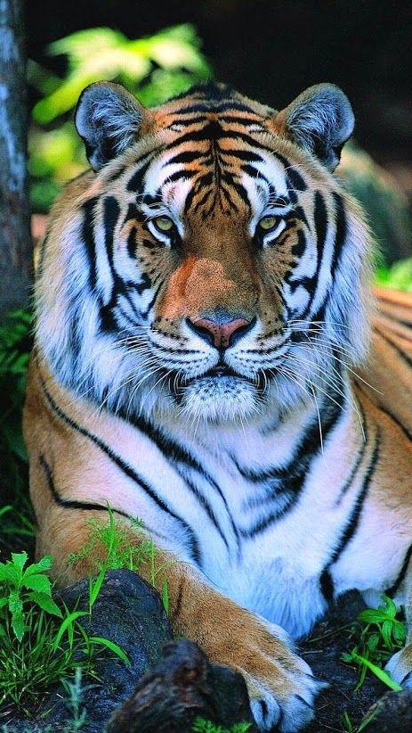
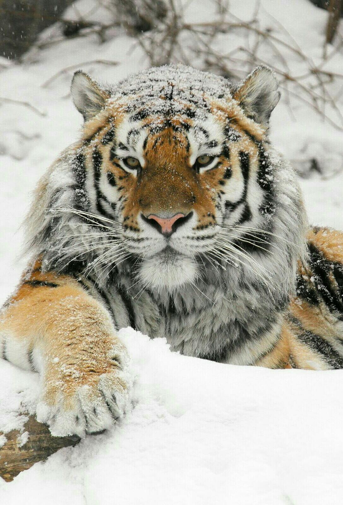

Тигры — крупные хищники семейства кошачьих.
 Тигр (Panthera tigris) — крупный хищник семейства кошачьих, крупнейший представитель своего вида среди диких кошек. Тигры обладают характерной полосатой окраской шерсти — темные полосы на рыжем фоне. Эта расцветка помогает маскироваться в среде обитания, облегчая охоту. Полосы уникальны для каждого животного, подобно отпечаткам пальцев у человека. Длина тела взрослого самца достигает 2,8—3 метров, высота в холке около метра, вес колеблется от 180 до 300 кг.
Тело стройное, мускулистое, передняя часть крупнее задней. Голова массивная, морда широкая, уши небольшие закругленные. Глаза ярко-желтые с вертикальным зрачком. Хвост длинный, покрыт кольцевыми полосками черного цвета. Конечности сильные, когти втяжные длиной до 10 см. Самцы крупнее самок примерно на треть, разница заметна также в ширине головы и строении черепа. Средняя продолжительность жизни в дикой природе составляет около 10—15 лет, в зоопарках может достигать 20—25 лет благодаря отсутствию естественных угроз и лучшему уходу. Исторически тигры обитали на обширных территориях Азии — от Западной Турции до Дальнего Востока России и Индонезии. Сегодня этот ареал значительно сократился, сохранившись лишь фрагментированно в Индии, Юго-Восточной Азии, Китае, Малайзии, Индонезии и России (Приморский край). Излюбленная среда обитания тигров — тропические леса, мангровые заросли, влажные саванны и горные местности. Они предпочитают густые лесные участки с хорошим укрытием, источниками воды и достаточным количеством добычи. Наиболее известные места обитания тигров в России — заповедники Уссури и Лазовский заказник Приморского края, в Индии — национальные парки Канха, Рантхамбор и Бандхавгарх, в Непале — национальный парк Читван. У тигров обычно рождается 2-3 тигрёнка. Новорожденные тигрята имеют массу около 1 кг и длину тела примерно 25 см. У них мягкий мех, чаще всего светло-коричневого цвета с едва заметными полосками. Глаза открываются спустя неделю-полторы после рождения. Популяция тигров резко сокращается вследствие разрушения среды обитания, браконьерства и деградации экосистем. По оценкам Международного союза охраны природы (IUCN), в мире осталось менее 4 тысяч особей всех видов тигров. Для защиты тигров создаются охраняемые зоны, разрабатываются программы восстановления популяции, принимаются законы против нелегальной торговли шкурами и частями тел тигров.Таким образом, тигр является уникальным представителем фауны Земли, символом силы и красоты, нуждающимся в активной защите человечества для предотвращения исчезновения.